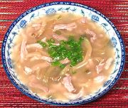

|
Pork & Szechuan Vegetable SoupChina - South | ||||
| Makes: Effort: Sched: DoAhead: |
4 soup ** 30 min Yes |
A light, simple soup with fairly intense flavors. As with other simple soups a lot depends on the quality of the stock used. | |||
|
9 2 4 1/2 4 1/4 tt tt |
oz t oz in c t |
Pork, lean (1) Cornstarch Szechuan Vegetable (2) Ginger Stock Pepper (3) Scallions Sesame Oil |
Make: - (30 min - 15 min work)
|